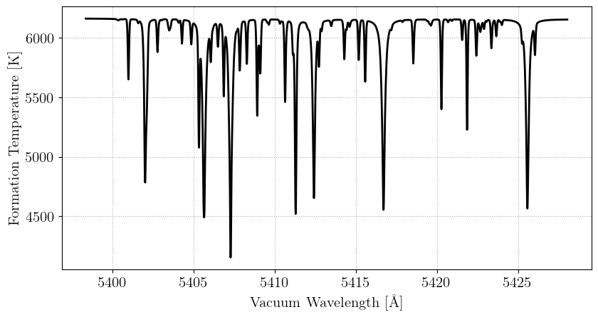
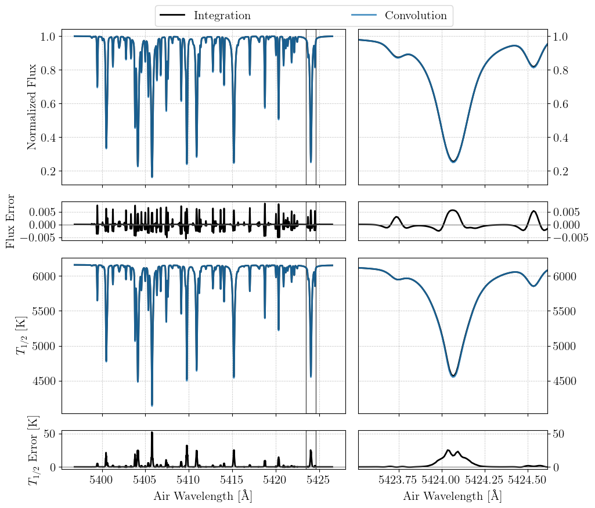

Basic Tutorial
In the simplest use case, a model flux spectrum and associated formation temperatures can be calculated given stellar parameters as input. For further details on specifying linelists, abundances, and other details of the model atmosphere, please see the Korg.jl documentation.
using Korg
using PythonPlot; plt = PythonPlot.pyplot
using FormationTemps; FT = FormationTemps
plt.style.use(joinpath(FT.moddir, "fig.mplstyle"))
# get the linelist
linelist = Korg.read_linelist(joinpath(FT.datdir, "Sun_VALD.lin"))[16000:16100]
# set stellar parameters
Teff = 5777.0
logg = 4.44
Fe_H = 0.0
vsini = 2100.0
ζ_RT = 3400.0 # radial-tangential macroturbulent broadening
ξ = 850.0 # microturbulent broadening
# create StellarProps composite type to hold everything
star_props = StellarProps(Teff=Teff, logg=logg, Fe_H=Fe_H,
vsini=vsini, v_macro=ζ_RT, v_micro=ξ)
# get the flux + formation temperature spectra
form_temp_result = FT.calc_formation_temp(star_props, linelist; Δλ=0.01)
# parse the result
wavs = form_temp_result.wavs
flux = form_temp_result.flux
temp = form_temp_result.form_temps
# plot the result
fig, ax1 = plt.subplots(figsize=(9.6,4.8))
ax1.plot(wavs, temp, c="k")
ax1.set_xlabel("{\\rm Vacuum Wavelength [\\AA]}")
ax1.set_ylabel("{\\rm Formation Temperature [K]}")
fname = joinpath(FT.moddir, "docs", "src", "static", "temp_example_jl.png")
fig.savefig(fname, bbox_inches="tight")
plt.show()
plt.clf(); plt.close()
The high-level convenience function calc_formation_temp provides a few optional arguments discussed below.
StellarProps
v_micro (microturbulent velocity ξ) accepts either a scalar or a vector of length Natm for per-layer microturbulence. All other velocity parameters (vsini, v_macro) are scalars.
Convolution vs. Integration
At low spectral resolving power, convolutions can be used to approximate the effects of macroturbulent and rotational broadening. As shown in Section 2.1.4 of the paper presenting FormationTemps.jl, this approximation can fail at higher resolution. By default, calc_formation_temp performs an explicit disk integration to evaluate model spectra and formation temperatures. Though more accurate, this approach is slower. To use the convolution approximation, pass convolve=true to calc_formation_temp. A plot comparing the convolution and integration fluxes and temperatures is shown below for a solar-like model star. As shown in the paper, the error incurred by the convolution approximation grows with $v \sin i$.

Parallelization
Disk integration (convolve=false) is the most computationally intensive mode and benefits from parallelization on both CPU and GPU.
CPU multithreading
The CPU disk integration path distributes tiles across Julia threads. Launch Julia with multiple threads to benefit:
julia -t auto # use all available cores
julia -t 8 # use 8 threadsNo code changes are required — calc_formation_temp detects the available threads automatically.
CPU multithreading is not compatible with calling FormationTemps.jl from Python via juliacall/PythonCall. Set JULIA_NUM_THREADS=1 when calling from Python. Use the GPU path for parallelism in that case.
GPU acceleration
By default, calc_formation_temp will use an NVIDIA GPU to accelerate the computation of spectra, if one is present and configured. The CUDA.jl documentation provides installation instructions. Pass use_gpu=false to force the CPU path. Pass gpu_precision=Float32 to run GPU computations at single precision, which roughly halves GPU memory and can improve throughput on consumer GPUs. Absorption coefficients are always computed at Float64 (a Korg requirement) and converted before GPU upload.
For details on what gets accelerated, memory layout, benchmarks, and CPU/GPU numerical differences, see the Parallelization guide.